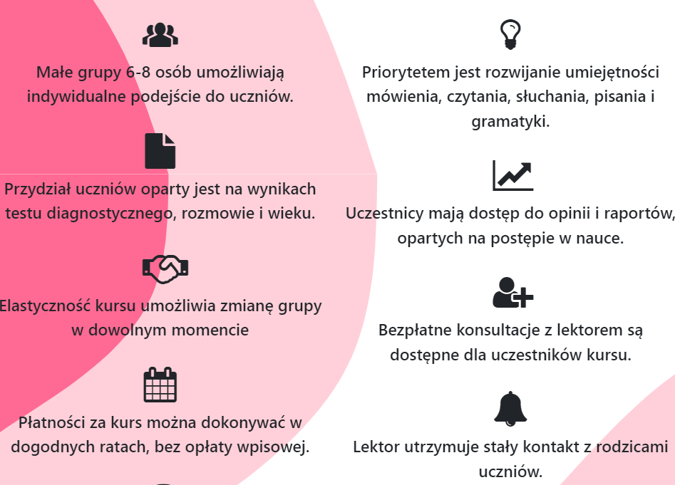
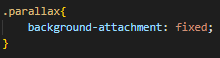
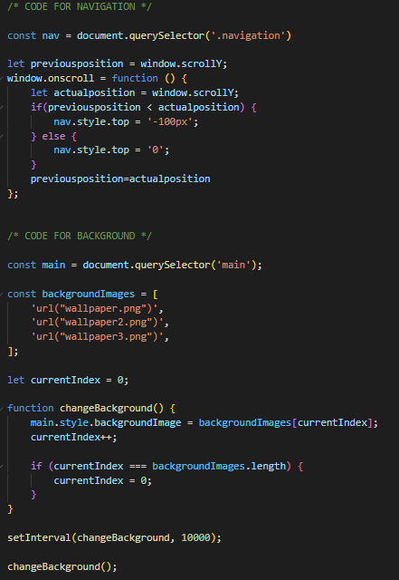

1. When building a webpage, I aim to limit text as much as possible, using icons and buttons to keep visitors focused and engaged, making the content easier to read without getting boring.

2. In most of my projects, I use a parallax background. It's just one line of code but creates a beautiful 3D effect.

3. I base my designs on a limited color palette — one dominant color and its shades, along with basics like white and black. This helps keep the design clean and professional.
4. In every project, I include a JavaScript script where the navigation hides when scrolling down and smoothly appears when scrolling up. The transition property adds a nice animation effect, which I also use for background changes to keep the site lively.

Background animation:

5. For layout structuring, I often rely on display: flex;. I believe it's the best CSS tool for efficiently arranging blocks and creating flexible designs.